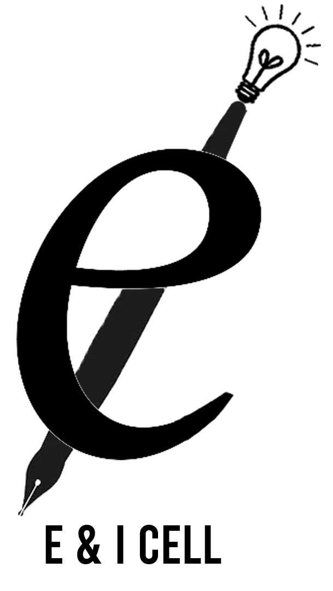
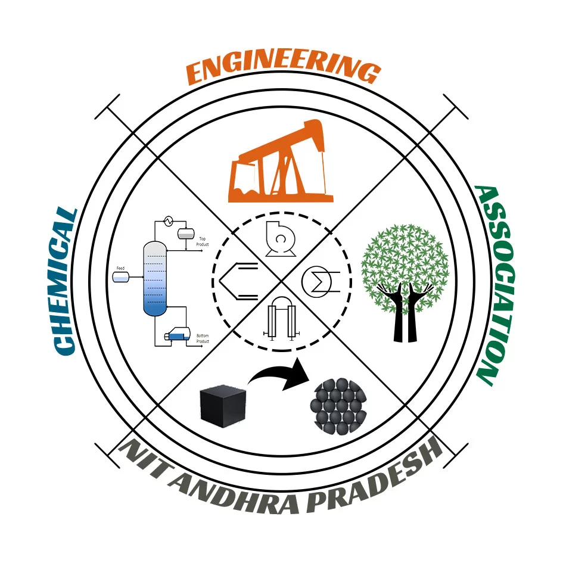
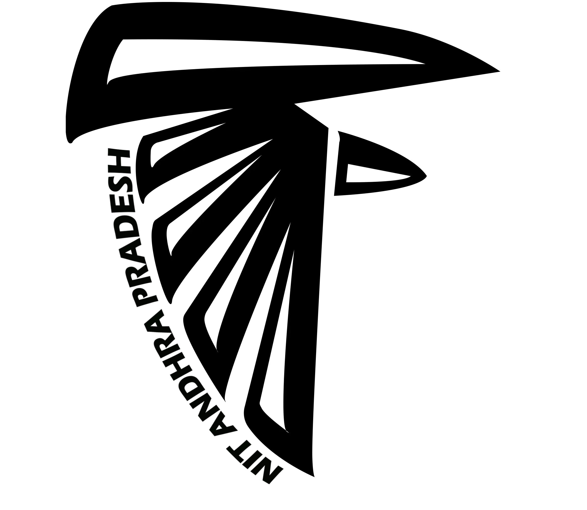

ABSORB – Chemical Engineering Departmental Magazine |
NIT – Andhra Pradesh
August 2020 - April 2022
- Currently occupying the position of Chief Editor, leading a team of 10 individuals as a Lead Designer, and carrying out content gathering works for the quarterly departmental magazine, ABSORB.
- Was also involved in the editorial and content gathering teams in the previous edition of the magazine, which gained
massive downloads all over the institute and received praise from multiple faculty members and students for its
ingenious content and innovative design.
Developer Student Clubs (Google Developers) | NIT – Andhra
Pradesh
October 2019 – August 2020
- Delivered multiple lectures on Web development using HTML, CSS, and JavaScript, Introduction to GIT and
GITHUB, Google Cloud Platform Crash Course and Mobile App Development using Flutter to an audience of over
50 students from various backgrounds and departments at NIT Andhra Pradesh.
- Curated and organized multiple workshops on a variety of new technologies and developments and successfully oversaw
the smooth functioning of the club.

Entrepreneurship and Innovation Cell | NIT – Andhra
Pradesh
October 2019 – August 2020
- Occupied positions of Joint Secretary, Executive Member and Associate Member.
-
Helped lead a team of 20 individuals in the cell to organize various events campus – wide and incubate innovation
amongst the members.
-
Curated a variety of events, most notably, WebTalks 2.0, where many entrepreneurs and business leaders presented their ideologies and gave inspiring lectures about industry standards and expectations, with emphasis on profile building and career growth.
-
Involved in the organization of a mock IPL auction, which promoted the ideology of proper money management
amongst the participants.
-
Promoted overall growth as a team and carried out team – building exercises.

Chemical Engineering Association | NIT – Andhra Pradesh
September 2019 – April 2022
- Current Secretary, previous Joint Secretary of the Association.
-
Played a crucial role in working with multiple teams across the department in conducting activities for the techno –
cultural fest at the NIT Andhra Pradesh.

Task Force | NIT – Andhra Pradesh
October 2019 – August 2021
- Acted as the Operations Team Co-ordinator
-
Undertook various administrative activities and decisions on behalf of the students.
- Helped to work on bridging the gap between the various other modules of the Task Force and the institute administration
- Played a managerial role by assigning tasks to various team members, evaluating reports, helping organize events
across the institute.
Recognized as a Microsoft Technology Associate in
Programming with Python
January 2020
Regional Topper, Informatics Practices – CBSE 2017 12th
grade examinations awarded by TVS Motor Limited.
August 2017
School-level Gold and Bronze Medals in the International
Science and Mathematics Olympiad respectively
2013